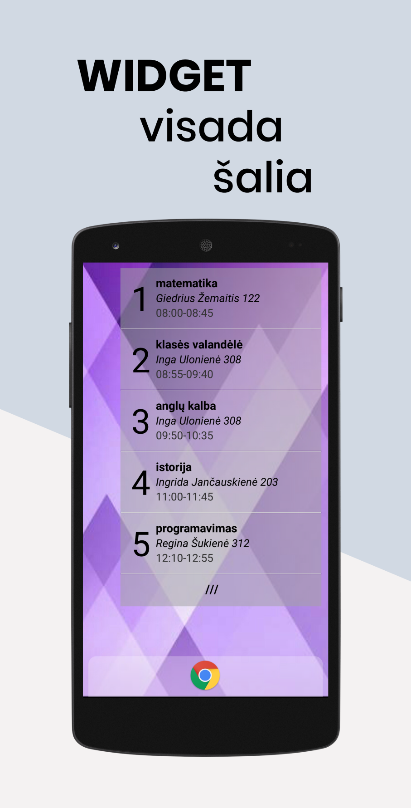
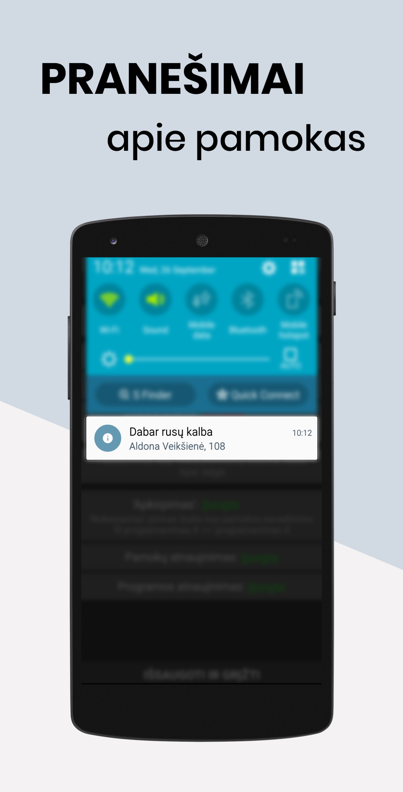

Gargždų „Vaivorykštės“ gimnazijos
TVARKARAŠTIS




APIE
Programa sukurta pagal "Tvarkaraštis" Play Store programos pricipą, bet
pritaikyta būtent šiai mokyklai.
Kuo naudinga:
* Nebereikia nešiotis suplyšusio tvarkaraščio lapo ar ranka perrašinėti pamokų
- pamokos atnaujinamos automatiškai
* Galimybė vieno mygtuko paspaudimu peržiūrėti tvarkaraštį - nereikia
valandą ieškoti savo vardo netvarkingame tinklalapyje
* Widget („valdiklis“): vienos dienos pamokos pradiniame telefono
ekrane - dar lengviau pasiekiama
* Patikimumas - neturint interneto ryšio arba neveikiant mokyklos
tinklalapiui galima pasižiūrėti išsaugotą tvarkaraštį
* Pranešimai (notifications) apie dabartinę ir kitą pamokas
* Tamsi ir šviesi programėlės spalvų temos (kartu keičiasi ir widget'o tema)
Nepasitikite, nenorite įrašinėti keistų programų į savo telefoną?
Ir nereikia. Dėl „aštuntojo pasaulio stebuklo” - „open source software”
- galite patys pasižiūrėti, ką programa veiks jūsų
telefone - prie kiekvieno parsisiuntimo yra programos kodo parsisiuntimas.
Programa kurta asmeninėms reikmėms, todėl funkcijos ir nustatymai gali
atrodyti labai 'specifiniai'
PARSISIUNTIMAI
v1.4
Parsisiuntimų: NaN
SVARBUS ATNAUJINIMAS: sensenės programos versijos nebesiunčia tvarkaraščio!
Įdėtas automatinis tvarkaraščio nuorodos gavimas
Pakeista "išsaugotų mokinių" sistema
Pridėti mokytojai ir kabinetai
Nebereikia perjungti tarp I-II ir III-IV klasių
Pataisyta klaida, kai programa crash'ina kraunant tvarkaraštį iš atminties
Pamokos pavadinimo 'apkarpymas' pašalins ir lygį (A, B) bei srautą (7 srautas)
Siųstis (.apk),
programos kodas (.zip)
SENESNI
DAŽNIAUSIAI UŽDUODAMI KLAUSIMAI
Bendrieji klausimai
K: Neleidžia įrašyti programos, ką daryti?
A: Nustatymuose turite leisti įrašyti programas iš „unknown sources”, pasieškokit, kaip tai padaryti.
K: Kodėl neįkeli į Play Store ar kur nors?
A: Nenoriu leisti 25$ registracijai.
K: Kiek užtrukai kurdamas tokį dalyką?
A: Kadangi pradėjau nieko nemokėdamas, ilgai... Jeigu reiktų daryti antrą
kartą, užtrukčiau mažiau.
Programos problemos ir paaiškinimai
Mokinio pasirinkimas:
→ Nustatymai > Mokinio pasirinkimas
→ Atnaujinti sąrašą
→ Pasirinkti I-II arba III-IV klases
→ Spausti ant norimo vardo
→ "Išsaugoti ir grįžti"
Mokinio išsaugojimas (pažymėjimas):
→ Nustatymai > Mokinio pasirinkimas
→ Palaikyti paspaudus mokinio vardą
* Norint ištrinti (atžymėti) - palaikyti paspaudus vardą išsaugotų mokinių sąraše
Rodomo pranešimo panaikinimas:
→ Nustatymai > Pranešimų nustatymai
→ Pranešimai: Išjungti
Widget (valdiklis) atsinaujina:
→ Kas 3 valandas (automatiškai)
→ Pasirinkus mokinį nustatymuose
→ Paspaudus "Atnaujinti pamokas"
"Programa neveikia", kitos problemos:
→ Atnaujinkite pamokų ir mokinių sąrašą
→ Ištrinkite programos duomenis:
* Telefono nustatymai > programos
* "Tvarkaraštis"
* Išvalyti programos duomenis (clear data)
→ Iš naujo įsirašykite programą
→ Blogiausiu atveju - susisiekite
Nerodo pranešimų:
* Kai kuriuose telefonuose įrašyta programinė įranga stabdo programos veikimą arba blokuoja prieigą prie pranešimų sistemos
→ Nustatymuose suteikite prieigą prie pranešimų
→ Įrašykite į išimtis veikimą reguliuojančioje programoje
* Vieno sprendimo visiems telefonų modeliams ir programinės įrangos versijoms nėra, ieškokite informacijos savo modeliui internete
Eidenis Kasperavičius, 2018